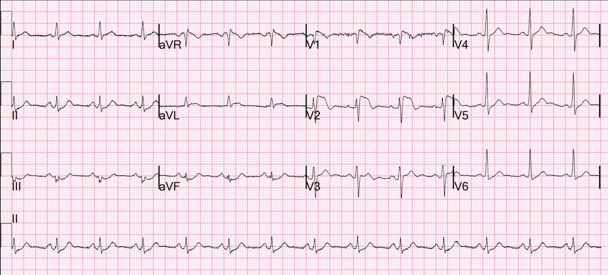
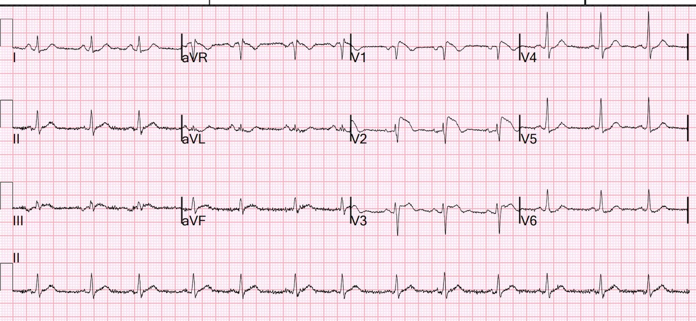
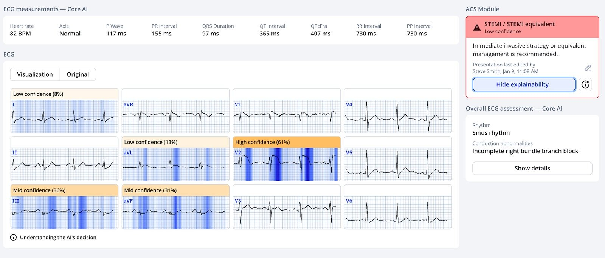
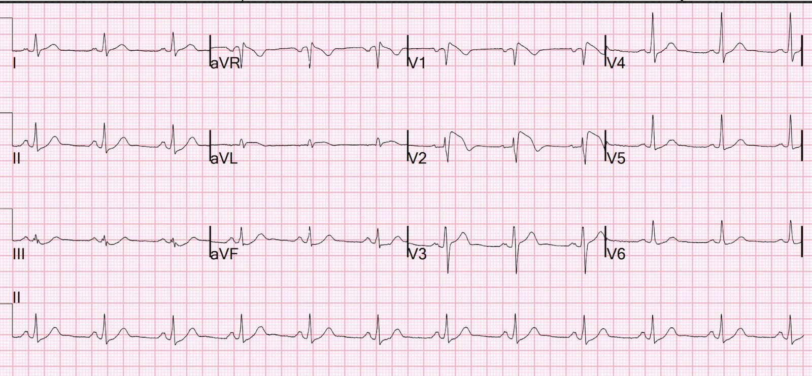
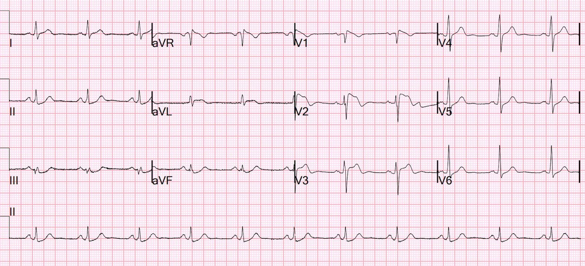
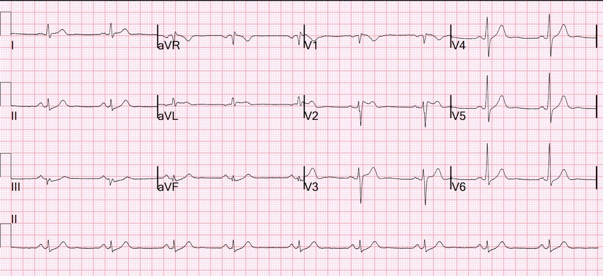

13/01/2025 — Nam giới ngoài 50 tuổi đau ngực lúc phân loại (triage)
Bản dịch tiếng Việt của bài "A 50-something man with Chest pain at triage" – Dr. Smith’s ECG Blog. Giữ nguyên toàn bộ 7 hình ảnh của bản gốc.
Một nam giới ngoài 50 tuổi đến khu phân loại (triage) vì đau ngực trong một ngày.
Một điện tâm đồ được ghi nhanh trước khi hỏi thêm bệnh sử hay khám thực thể:


Bạn nghĩ gì?
Khi tôi thấy điện tâm đồ này (được trình bày tại một hội nghị), tôi lập tức nghĩ rằng nó trông giống kiểu hình sao chép Brugada (Brugada phenocopy) típ 1 (nói cách khác là hình ảnh điện tâm đồ Brugada típ 1). Có hình ảnh rSR’ ở chuyển đạo V1 mà không có gai nhọn của sóng R’. ST chênh lên dốc xuống bắt đầu ngay từ đỉnh, dẫn tới sóng T đảo ngược. Chuyển đạo V2 cũng có ST chênh lên dốc xuống kèm sóng T đảo ngược.
Cũng có một ít ST chênh lên ở aVL, kèm ST chênh xuống soi gương ở các chuyển đạo dưới, rất gợi ý OMI. Điều này bất thường đối với Brugada, vì vậy phải hết sức cẩn thận để không gạt bỏ nó. Tất cả những thay đổi này vẫn có thể là do tắc LAD đoạn gần.
Mặc dù aVL và các chuyển đạo dưới có hình dạng bất thường, tôi vẫn nghĩ nó trông giống Brugada, nhưng cần khảo sát thêm:
Ca bệnh tiếp diễn:
Hỏi thêm bệnh sử cho thấy bệnh nhân có ho và khó thở. Nhiệt độ là 39.5 C. X-quang ngực cho thấy có thâm nhiễm. Như vậy, đã tìm ra một nguyên nhân khác gây đau ngực, và tình trạng sốt gợi ý “Brugada do sốt khởi phát” (fever-induced Brugada). Bác sĩ phụ trách nhanh chóng nhận ra tất cả những điều này và đã không kích hoạt phòng thông tim.
Các điện tâm đồ tiếp theo được ghi lại:
18 phút:


Queen of Hearts đã bị đánh lừa, nhưng với độ tin cậy thấp:


Troponin ban đầu trả về dưới 3 ng/L.
2 giờ:


Kiểu hình sao chép Brugada vẫn tiếp tục
Một lần nữa, V1 và V2 có hình ảnh Brugada típ 1 (xem các tiêu chuẩn của típ 1 bên dưới)
Để xác định đây có thực sự là Brugada hay không, điều quan trọng là xác định xem QRS có thực sự giãn rộng hay không.
Nếu QRS giãn rộng, chẩn đoán phân biệt bao gồm:
1. Tăng kali máu
2. Ngộ độc thuốc, đặc biệt là diphenhydramine, thuốc có tác dụng chẹn kênh natri, đồng thời có tác dụng kháng cholinergic có thể gây nhịp nhanh xoang, tăng thân nhiệt, mê sảng và khô da.
—-Các thuốc khác có tác dụng chẹn kênh natri: thuốc chống trầm cảm ba vòng. Chúng gây sóng R lớn ở aVR, nhưng thường cũng làm QRS rộng hơn.
—-Các thuốc chẹn kênh natri khác, như flecainide hoặc cocaine.
Tuy nhiên, nếu QRS không giãn rộng thì nhiều khả năng là Brugada, và trong ca này, Brugada bị sốt bộc lộ nhiều khả năng là thủ phạm.
Tiêu chuẩn của hình thái típ 1:
1. Sóng R’ cao ít nhất 2 mm ở V1 hoặc V2
2. Nhưng không có sóng R’ tách biệt vì đoạn ST khởi đầu theo một góc ngay từ đỉnh
3. Đoạn ST lồi lên trên (“dạng vòm” – coved). [Họ dùng thuật ngữ “lõm xuống dưới” (concave downward)]
4. Đỉnh ở điểm khởi đầu cao không trùng với điểm J. Nó nằm TRƯỚC điểm J, khi đo đối chiếu ở các chuyển đạo khác (ví dụ chuyển đạo II chạy dọc phía dưới). Xem minh họa này.
5. Đoạn ST dốc xuống từ từ sao cho tại thời điểm 40 ms sau điểm khởi đầu, biên độ giảm ít hơn 4 mm (trong ví dụ này, giảm ít hơn 1 mm). Ở RBBB thông thường, biên độ giảm nhiều hơn hẳn (xem ví dụ này).
6. Sau đoạn ST là sóng T âm đối xứng
7. “Thời gian QRS dài hơn so với RBBB,” và “có sự không tương xứng giữa V1 và V6.” Tiêu chuẩn này khó hiểu và không được giải thích rõ.
8. Độ dốc xuống phải sao cho chỉ số Corrado lớn hơn 1.0 (xem ví dụ ở trên), điều này bảo đảm ST chênh lên có đủ độ dốc xuống.
Chỉ số Corrado là tỷ số: [mức ST chênh lên tại điểm J] chia cho [mức ST chênh lên tại thời điểm 80 ms sau điểm J]. Đoạn ST phẳng sẽ có chỉ số Corrado lớn hơn 1.
Xem tại đây để biết thêm chi tiết, đặc biệt về Brugada típ 2:
Is this Type 2 Brugada syndrome/ECG pattern? (Đây có phải là hội chứng/hình ảnh điện tâm đồ Brugada típ 2?)
Ca bệnh tiếp diễn:
Sáng hôm sau:


Kiểu hình sao chép Brugada típ 1 vẫn tiếp tục
Ngày 2:


Bây giờ điện tâm đồ có hình thái Brugada típ 2!
Xem bài này để tìm hiểu thêm về Brugada típ 2 và hình thái của nó:
Is this Type 2 Brugada syndrome/ECG pattern? (Đây có phải là hội chứng/hình ảnh điện tâm đồ Brugada típ 2?)
Có một thang điểm gọi là “điểm Thượng Hải (Shanghai score)” (liên kết tới công cụ tính trực tuyến mdcalc) dùng để tính nguy cơ Brugada. Thang điểm này được dùng khi có nghi ngờ lâm sàng hội chứng Brugada dựa trên các dấu hiệu điện tâm đồ, và dựa trên:
1. Điện tâm đồ
1.a. Hình ảnh típ 2 hoặc típ 3 chuyển thành típ 1 khi làm test kích thích bằng thuốc. +2
1.b. Hình ảnh típ 1 do sốt khởi phát: +3
1.c. Hình ảnh típ 1 tự phát: +3.5
2. Tiền sử lâm sàng
2.a. Rung nhĩ/cuồng nhĩ ở tuổi dưới 30: +0.5
2.b. Ngất không rõ nguyên nhân: +1
2.c. Nghi ngất do rối loạn nhịp: +2
2.d. Thở hấp hối về đêm: +2
2.e. Ngừng tim không giải thích được hoặc rung thất (VF)/VT đa dạng được ghi nhận: +3
3. Tiền sử gia đình
3.a. Không có: 0
3.b-d. Đột tử do tim không giải thích được (3 nhóm) (+0.5 – +2)
4. Kết quả xét nghiệm di truyền
Với bệnh nhân này, ông được 3 điểm cho Brugada do sốt khởi phát và không điểm cho các mục khác, tổng cộng là 3, tương ứng với “Có thể là hội chứng Brugada” (Possible Brugada Syndrome)
Diễn tiến: Viêm phổi của bệnh nhân được điều trị và cải thiện. Bệnh nhân ổn định huyết động để xuất viện. Ông được khuyên trong tương lai cần xử trí tích cực tình trạng sốt cao và tránh các thuốc chẹn kênh natri.
Dưới đây là thêm các ca Brugada do sốt khởi phát:
—Hyperthermia and ST Elevation (Tăng thân nhiệt và ST chênh lên)
— Hội chứng Brugada và sốt đã được bàn luận kỹ
—A Patient with Syncope (Một bệnh nhân bị ngất)
— một ca ngất rất kín đáo do Brugada đã bị bỏ sót ở lần khám đầu tiên và mãi tới khi bệnh nhân ngất tái phát 3 năm sau mới được chẩn đoán.
–Syncope and ST Segment Elevation. And another finding. How well does the computer interpretation perform? (Ngất và đoạn ST chênh lên. Và một dấu hiệu khác. Kết quả đọc bằng máy tính hoạt động tốt đến đâu?)
— trong ca này, máy tính chẩn đoán STEMI nhưng bệnh nhân bị sốt kèm Brugada
—Một phụ nữ trẻ tăng thân nhiệt, mê sảng và khô da: Brugada do sốt khởi phát? Ngộ độc diphenhydramine? Thuốc ba vòng?
= = =
======================================
BÌNH LUẬN CỦA TÔI, bởi KEN GRAUER, MD (13/1/2025 — Cập nhật ngày 11/11/2025):
Ca hôm nay của Dr. Smith làm nổi bật một số điểm MẤU CHỐT:
- Điểm #1: Chúng ta cần tự tin khi nhận ra kiểu hình sao chép Brugada (như đã nhấn mạnh trong bài ngày 22 tháng Bảy năm 2023 của Dr. Smith’s ECG Blog — cũng như trong bài ngày 5 tháng Năm năm 2022 — bài ngày 25 tháng Mười Một năm 2022 — và nhiều bài khác).
- Điểm #2: Chúng ta cần nhớ các nguyên nhân thường gặp của kiểu hình sao chép Brugada.
- Điểm #3: Chỉ nên chẩn đoán kiểu hình sao chép sau khi đã loại trừ các nguyên nhân khác gây bất thường trên điện tâm đồ.
- Điểm #4: Nắm rõ bệnh sử là điều then chốt để phân biệt hội chứng Brugada với kiểu hình sao chép.
= = =
Áp dụng những điểm này vào ca hôm nay:
Mặc dù Dr. Smith ngay lập tức nhận ra hình ảnh điện tâm đồ Brugada-1 ở các chuyển đạo V1,V2 của điện tâm đồ ban đầu hôm nay — vẫn có những dấu hiệu thiết yếu khác trong bản ghi này và trong ca này:
- Như Dr. Smith đã nhận xét — có ST chênh lên dạng vòm ở chuyển đạo aVL, đi kèm ST chênh xuống soi gương ở từng chuyển đạo dưới.
- Có ST chênh xuống kín đáo-nhưng-có-thật ở các chuyển đạo V5,V6.
- Mặc dù có hình dạng Brugada-1 điển hình ở chuyển đạo V1 trên điện tâm đồ ban đầu (với khung hình ảnh Brugada-1 này tiếp tục ở chuyển đạo V2) — đoạn ST ở chuyển đạo V2 vẫn chênh lên 3+ mm. trong một khoảng thời gian dài hơn so với thường thấy ở kiểu hình sao chép Brugada đơn thuần.
- Lý do đến khám ghi nhận lúc phân loại là “nam 50 tuổi đau ngực!” Bệnh sử khai thác sau đó trong ca hôm nay đã làm rõ tình huống (ở chỗ bệnh nhân này bị khó thở, ho và sốt cao do viêm phổi) — nhưng thông tin đó chưa được biết vào thời điểm xem điện tâm đồ ban đầu.
- Trong số các tình trạng có thể tạo ra kiểu hình sao chép Brugada có nhồi máu và thiếu máu cục bộ. Vì vậy — điện tâm đồ ban đầu hôm nay có thể phù hợp với kiểu hình sao chép Brugada thứ phát do một OMI cấp.
= = =
= = =
Các hình ảnh điện tâm đồ Brugada:
Dù đã thấy bao nhiêu lần các hình ảnh điện tâm đồ Brugada-1 và Brugada-2 — tôi vẫn thấy mình phải xem lại các hình minh họa dưới đây trong Hình 1:
= = =
Hình 1: Ôn lại các hình ảnh điện tâm đồ trong hội chứng Brugada (phỏng theo Brugada và cs. trên JACC: Vol. 72; Issue 9; 2018):
— A) Hình ảnh điện tâm đồ Brugada-1, cho thấy ST chênh lên dạng vòm ≥2 mm ở ≥1 chuyển đạo trước tim bên phải, theo sau là sóng T âm.
— B) Hình ảnh điện tâm đồ Brugada-2 (hình ảnh “yên ngựa” (Saddle-back)) — cho thấy ST chênh lên dạng lõm (concave-up) ≥0.5 mm (thường ≥2 mm) ở ≥1 chuyển đạo trước tim bên phải, theo sau là sóng T dương.
— C) Các tiêu chuẩn bổ sung để chẩn đoán hình ảnh điện tâm đồ Brugada-2 (TRÊN: góc β (ß-angle); DƯỚI: Có hình ảnh Brugada-2 nếu tại vị trí 5 mm bên dưới điểm lên cao nhất của r’ — đáy của tam giác được tạo thành là ≥4).

= = =
Về hội chứng BRUGADA so với kiểu hình sao chép:
- Xin nhắc lại — hình ảnh điện tâm đồ Brugada típ 1 được chẩn đoán khi thấy ST chênh lên ≥2 mm ở một hoặc nhiều chuyển đạo trước tim bên phải (tức là V1, V2, V3) — theo sau là sóng r’ và đoạn ST dạng vòm hoặc thẳng — trong đó đoạn ST cắt qua đường đẳng điện và kết thúc bằng sóng T âm (Xem Ô A trong Hình 1).
- Hình ảnh Brugada-1 có thể được quan sát thấy một cách tự phát (với các chuyển đạo V1 và/hoặc V2 đặt ở vị trí bình thường — hoặc đặt cao hơn bình thường 1 hoặc 2 khoang liên sườn) — hoặc — hình ảnh Brugada-1 có thể được quan sát thấy khi làm test kích thích bằng thuốc sau khi tiêm tĩnh mạch một thuốc chẹn kênh natri như ajmaline, flecainide hoặc procainamide.
- LƯU Ý: Mặc dù Ô A trong Hình 1 minh họa hình dạng điển hình của hình ảnh điện tâm đồ Brugada-1 — vẫn có những biến thể của “chủ đề” này. Mẫu số chung của các hình ảnh điện tâm đồ Brugada-1 là ST chênh lên lẽ ra không có ở ≥1 chuyển đạo trước tim bên phải — theo sau là đoạn ST dốc xuống nhanh vào sóng T âm. Đoạn ST chênh lên thường đi xuống dốc đứng — nhưng đôi khi có thể có hình dạng tròn hơn (như trong ca hôm nay).
- Ô B trong Hình 1 minh họa hình ảnh điện tâm đồ Brugada típ 2 hay “yên ngựa” (Saddle-back) . Hình ảnh này có thể gợi ý — nhưng không chẩn đoán được hội chứng Brugada. Tùy thuộc vào sự có mặt hay vắng mặt của các yếu tố lâm sàng khác — bản thân hình ảnh điện tâm đồ Brugada-2 (tức là không kèm hình ảnh Brugada-1) — có thể không có ý nghĩa lâm sàng.
= = =
Các nguyên nhân thường gặp của kiểu hình sao chép Brugada:
Trong số các tình trạng khác ngoài hội chứng Brugada có thể tạm thời tạo ra hình ảnh điện tâm đồ Brugada-1 có:
- Bệnh lý cấp tính có sốt.
- Thay đổi trương lực thần kinh tự chủ (như có thể xảy ra khi ngất).
- Hạ thân nhiệt.
- Thiếu máu cục bộ hoặc nhồi máu.
- Ngừng tim.
- Rối loạn điện giải (đặc biệt là tăng kali máu — nhưng cũng có thể là hạ kali máu hoặc hạ natri máu).
- Một số thuốc.
- Các tình trạng khác không được liệt kê ở trên …
= = =
Điểm MẤU CHỐT: Những bệnh nhân có các tình trạng như vậy, có thể thoáng qua bắt chước các dấu hiệu điện tâm đồ của hình ảnh Brugada-1, được gọi là có kiểu hình sao chép Brugada.
- Tầm quan trọng của việc nhận ra kiểu hình sao chép — là ở chỗ điều chỉnh tình trạng nền có thể làm biến mất hình ảnh điện tâm đồ Brugada-1 (với tiên lượng tốt hơn nhiều so với bệnh nhân mắc hội chứng Brugada thực sự).
- 2 yếu tố khởi phát thường gặp nhất của kiểu hình sao chép Brugada mà chúng tôi đã thấy trên Dr. Smith’s ECG Blog là: i) Bệnh lý cấp tính có sốt; và ii) Tăng kali máu. Dù vậy — ca hôm nay minh họa tầm quan trọng của việc ghi nhớ rằng nhồi máu cấp hoặc thiếu máu cục bộ cũng có thể tạo ra hình ảnh này.
- NẾU rõ ràng về mặt lâm sàng rằng sự xuất hiện thoáng qua của hình ảnh điện tâm đồ Brugada-1 là kiểu hình sao chép “thuần túy” (và chỉ do một bệnh lý hoặc tình trạng cấp tính đã được điều chỉnh dễ dàng) — thì có thể không cần đánh giá thêm. Ngược lại, nếu — bệnh nhân có các yếu tố nguy cơ khác, tiền sử gia đình dương tính, hoặc có các lo ngại lâm sàng khác — thì có thể chuyển đi làm test kích thích bằng thuốc chẹn kênh natri để loại trừ hội chứng Brugada.
= = =
= = =